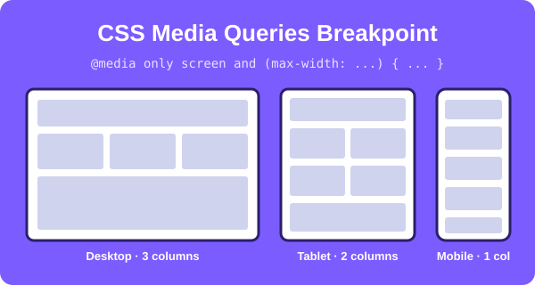

Rooftop turbines
Compact turbines on buildings generate power where it is used.
CSS media queries · Responsive design
Resize your browser window and watch the layout adapt. Media queries apply different styles depending on screen width, height, orientation and resolution.
One layout, three breakpoints.

| Device | Media query | Feature columns |
|---|---|---|
| Desktop | min-width: 992px | 3 |
| Tablet | max-width: 991px | 2 |
| Mobile | max-width: 600px | 1 |
The grid below changes from 3 to 2 to 1 columns as the screen shrinks.
Compact turbines on buildings generate power where it is used.
Handle gusty, changing urban wind from any direction.
Track wind speed and output in real time.
Batteries hold surplus wind power for calm hours.
Wind-powered chargers cut transport emissions.
Self-powered lights that dim and brighten with demand.
min-resolution.prefers-color-scheme: dark switches this page to a dark theme.@media print hides the header and background colours..mq-grid { display: grid; grid-template-columns: repeat(3, 1fr); gap: 16px; }
@media only screen and (max-width: 991px) {
.mq-grid { grid-template-columns: repeat(2, 1fr); }
}
@media only screen and (max-width: 600px) {
.mq-grid { grid-template-columns: 1fr; }
}